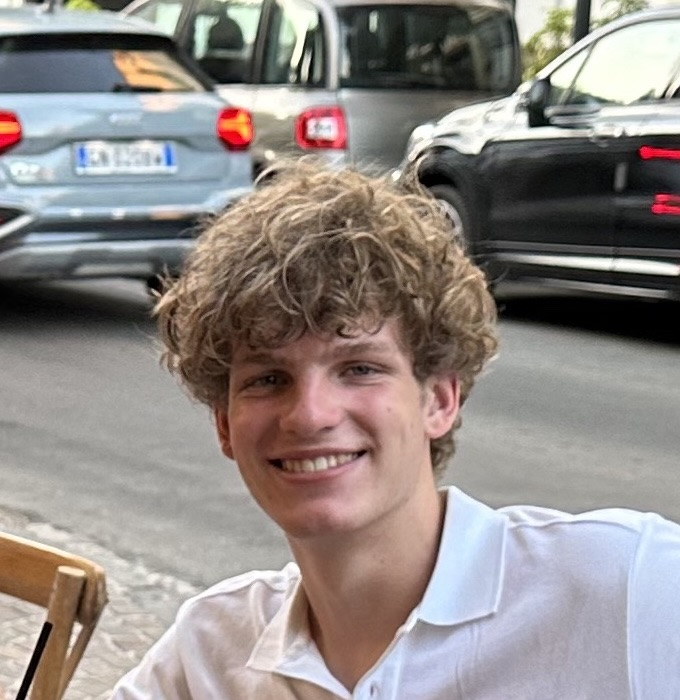

About

Hi I'm Mark, a 2nd year CS major passionate about technology and making an impact. When I'm not working on my projects you'll probably find me out on a run, playing basketball, reading up on history, or researching my next project!
My biggest areas of interest are ML/AI, embedded systems, and full-stack development.